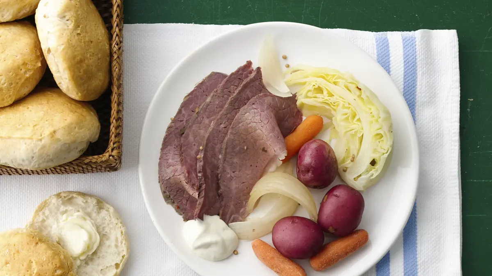

INDEX
INDEX
|
Category: Entrees
|
Preparation time: 15 minutes (12 hours 50 minutes start to finish)
|
| Slow-Cooked Corned Beef and Cabbage Dinner |
| Traditional Corned Beef and Cabbage in a Crock Pot. |
|
Ex Culina: Pillsbury
|
 |
Ingredients:
2 pounds small red potatoes
1.5 cups fresh baby carrots
1 medium onion, cut into 8
wedges
2 to 2.5 pound corned beef brisket with seasoning packet
2 cups apple juice
Water
8 thin
wedges cabbage
Directions:
- Place potatoes, carrots and onion in 5 to 6 1/2-quart slow cooker. Top with corned beef brisket; sprinkle
with contents of seasoning packet.
- Add apple juice and enough water to just cover brisket. Cover; cook on low setting for 10 to 12 hours.
- About 40 minutes before serving, remove beef from slow cooker; place on serving platter and cover to keep
warm.
- Add cabbage wedges to vegetables and broth in slow cooker. Increase heat setting to high; cover and cook an
additional 30 to 35 minutes or until cabbage is crisp-tender.
- To serve, cut corned beef across grain into thin slices. With slotted spoon, remove vegetables from slow
cooker. Serve corned beef and vegetables.
Yield: 8 servings